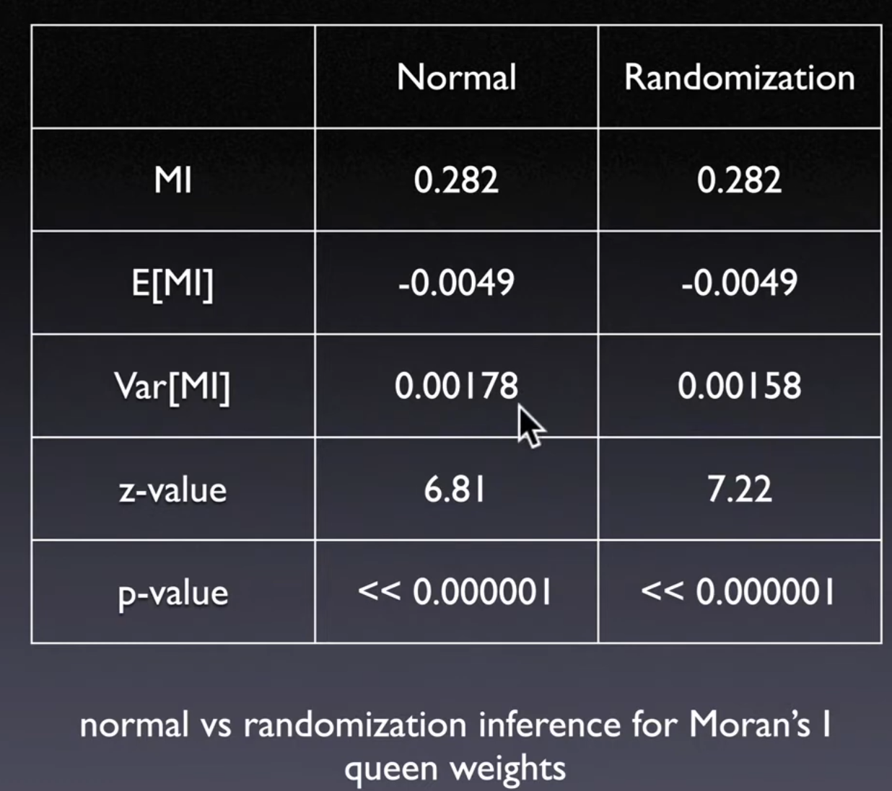
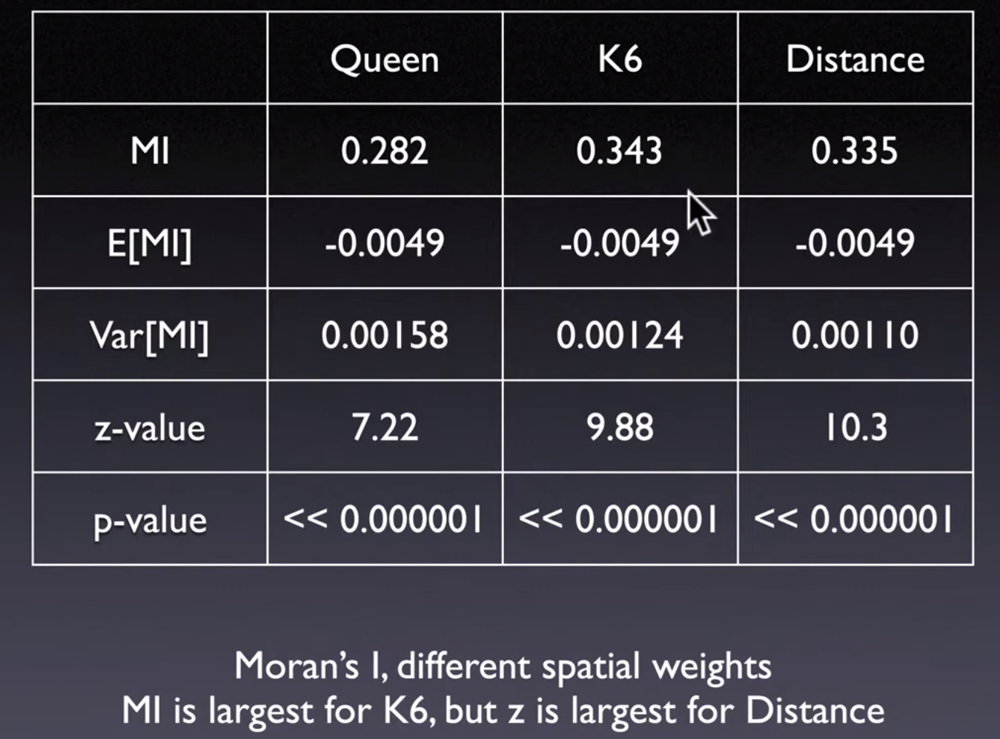
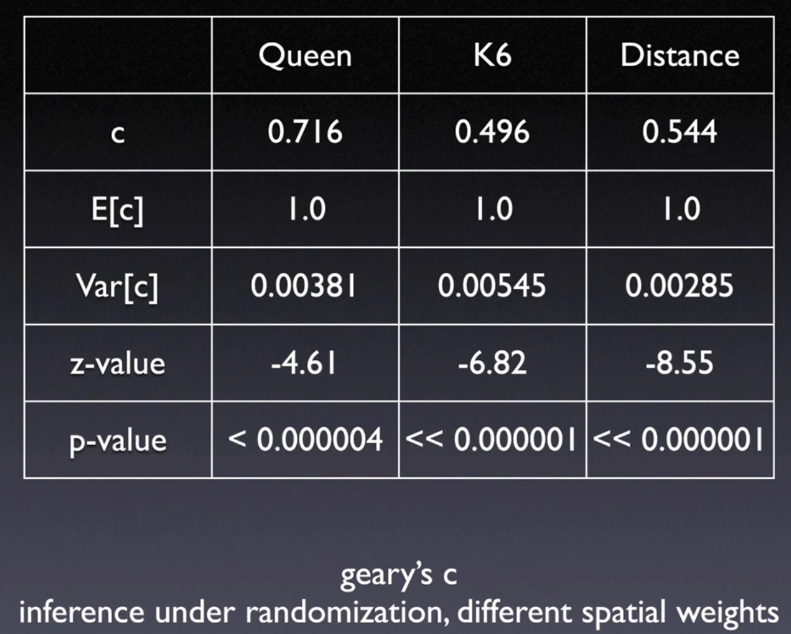

21. Moran’s I and Geary’s C#
21.1. Global Spatial Autocorrelation Measures#
One statistic for the whole pattern
Test for clustering not for clusters (location)
21.1.1. Moran’s I (1948)#

The most commonly used for many
spatial autocorrelation statistics
\(S_0 = \sum_i\sum_j W_{ij}\), \(Z_i = y_i-m_x\): deviations from mean
\(\sum_j w_{ij}z_j\) is the independent variable in this regression, called
spatial lag
Moran's Idepends onspatial weights, relative magnitude for same weights
Similar to
Person Correlation, which is \((Cross Product)/Sd\), Here is autocorrelation,
21.1.2. Inference#
How to assess whether the computed value of
Moran's Indexis significantly different from a value for a spatially random distribution
Assume
normal distributionCompare value to a
reference distributionobtained from a series of randomly permuted patternsPositive and significant = clustering of like value
Different Process can result in the same pattern
True contagion: Evidence of clustering due to spatial interaction
Spatial interaction can through network other than geographical distance
Apparent contagion: Evidence of clustering due to spatial heterogeneity
Negative and significant = alternating values
Moran Z-value
Z are comparable across variables and across spatial weights
Moran’s I are not comparable if spatial weight matrix are not same
Spatial weight matrix is for spatial similarity measuring
21.2. Geary’s C (1954)#
Squared differenceas measure of dissimilarityValues between 0 and 2
Similar to notion of
variogram(geo-statistics)
\(S_0 = \sum_i \sum_j W_{ij}\)
21.2.1. Interpretation#
Positive spatial autocorrelation: \((c < 1)\) or \((z < 0)\)
Negative spatial autocorrelation: \((c > 1)\) or \((z > 0)\)
21.2.2. Inference#
Same to
Moran's I
